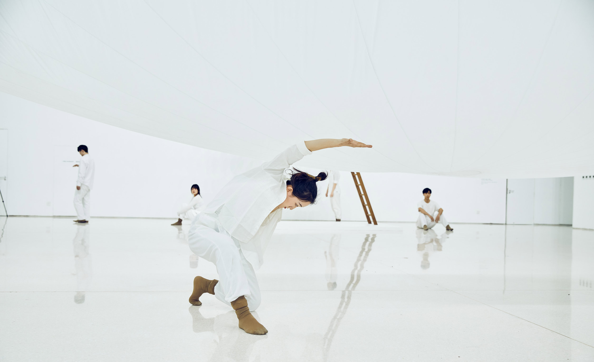
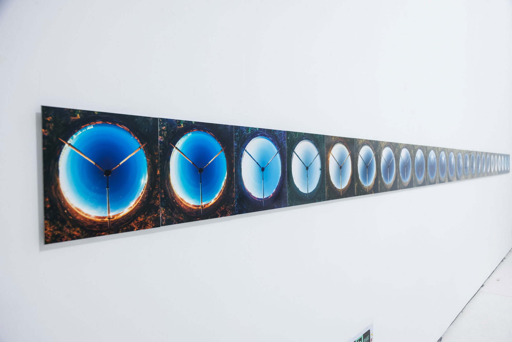

Wavelength: At the Moment
Beijing Times Art Museum
2021
Beijing Times Art Museum
2021
The exhibition previewed works of of 18 international and Chinese contemporary artists with different cultural
and artistic backgrounds, and presented the "new spacetime of contemporary art" to the local audience,
creating a multisensory exhibition experience.
We presented three works in the exhibition: 24 Hours, 2005, Lines and Circles, 2007 and Pneumatic Cloud
2007/2021. The new work was produced partly in Helsinki and partly in Shanghai.
After Beijing the exhibition toured in two other cities, Chengdu and Chongqing.
Pneumatic Cloud


24 Hour


Lines and Circles


Photos: Xue Yu Zhe